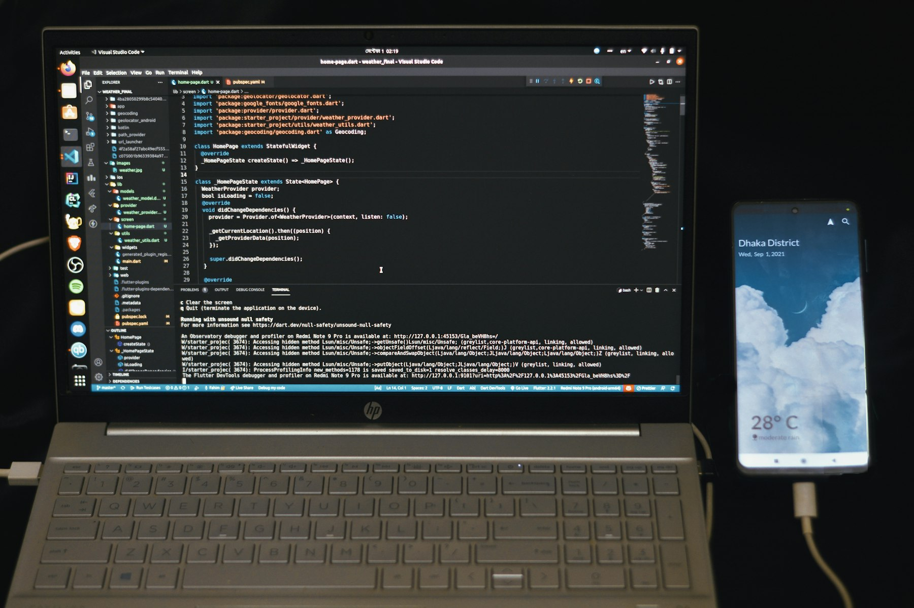

TL;DR
For beginners with a small budget, allocate $500 wisely among ETFs. Start with broad market ETFs like SPY or VTI, focus on expenses, and avoid over-diversification. A structured approach leads to better outcomes.
Quick Answer: Start with Broad Market ETFs
For beginner investors looking to allocate a small budget, starting with broad market ETFs like the SPDR S&P 500 ETF Trust (SPY) is a smart choice. Allocating $500 in this ETF provides exposure to the top U.S. companies without the need for picking individual stocks. A fund like this typically has low expense ratios and offers the potential for long-term growth...
Why Most Beginners Pick the Wrong Stocks
### Why Most Beginners Pick the Wrong Stocks
Many beginners mistakenly believe that investing in ETFs is too complicated or risky, which often leads them to under-explore this investment avenue. The misconception that “individual stocks offer better returns” can be detrimental.
For instance, consider a novice investor who sinks $5,000 into a popular tech stock, expecting it to skyrocket. If that company faces sudden regulatory issues, that investment could lose 30% overnight, leaving the investor with just $3,500.
In contrast, a broad market ETF like the SPDR S&P 500 ETF (SPY), which includes 500 diverse companies, spreads risk across various sectors. If one stock underperforms, gains in others can offset those losses. For example, a $5,000 investment in SPY could yield an average annual return of around 7% over a long-term horizon, which is more stable than the unpredictable nature of individual stocks.
Let’s consider a scenario: Jane is a new investor, eager to maximize her returns. She puts all her money into shares of a single emerging tech company, dreaming of quick gains. Meanwhile, her friend Mark decides to allocate the same $5,000 into a variety of ETFs focusing on sectors like technology, consumer goods, and healthcare.
Over three years, Jane’s stock performs erratically, ultimately yielding a return of 5%, while Mark’s ETFs average a 10% return. By diversifying in ETFs, Mark not only reduces his risk but also sees increased steadiness in his gains.
Ultimately, while the allure of individual stocks can be tempting, beginners need to recognize the added security and consistent returns that ETFs can offer, especially when working with a limited budget.
A 30-Day Screening Process to Select ETFs
### A 30-Day Screening Process to Select ETFs
To effectively select ETFs, beginners can implement a structured 30-day screening process divided into three steps: 1. Research (Days 1-10): Start by identifying a variety of ETFs that align with your investment goals. Utilize resources like Morningstar or ETF.com to gather information on ETFs that track well-known indices, such as the S&P 500 or niche markets like emerging technologies.
For instance, you might discover the "Invesco QQQ ETF," which tracks the Nasdaq-100 Index, making it suitable if you're interested in tech. Aim to compile a list of at least 15 ETFs.
Set aside 30 minutes each day to dedicate to this research, realizing that thorough analysis upfront can prevent costly mistakes later. 2. Analysis (Days 11-20): After narrowing your list, examine each ETF's performance over various timeframes—1 year, 3 years, and 5 years. Look for metrics like expense ratios, tracking errors, and dividend yields.
For example, if you find the "Vanguard Total Stock Market ETF" (VTI) with a low expense ratio of 0.03% and an average annual return of 15% over the last five years, it may be an appealing option, especially for cost-conscious investors looking for broad market exposure.
Spend at least 45 minutes daily reviewing the different performance metrics, comparing them against your investment horizons and risk tolerance. 3. Decision-Making (Days 21-30): With a shortlist of 5-7 ETFs, it’s time to evaluate how each fits into your overall portfolio. Consider factors such as sector diversification and the correlation of these ETFs with your existing investments.
Create hypothetical scenarios—if you already own a few tech-focused ETFs, you might want to balance with something from sectors like healthcare or utilities to mitigate risks. For example, if you choose to invest $1,000, you could allocate $300 to the "Health Care Select Sector SPDR Fund" (XLV) for stability, while investing $700 in the "iShares Russell 2000 ETF" (IWM) to pursue growth in small-cap equities.
Finally, decide how you’ll execute trades, considering commission fees and the timing of your investment based on market conditions, remembering that immediate execution can sometimes come with higher costs.
By following this 30-day process, you put yourself in a better position to make informed decisions for initial ETF investments within a limited budget, ensuring a blend of growth potential and risk management.
A Simple Beginner Example With Numbers
### A Simple Beginner Example With Numbers
Imagine you have a $500 budget to start your ETF investing journey. A practical way to diversify is by allocating your funds across different sectors. Let's say you decide to invest $250 in the Vanguard S&P 500 ETF (VOO), which provides exposure to large-cap U.S. equities, and $250 in the iShares Core U.S. Aggregate Bond ETF (AGG), which aims for stability and income.
After a year, suppose VOO appreciates by 10%, driven by robust corporate earnings and general economic growth. Your initial investment of $250 in VOO would grow to $275, giving you a gain of $25. On the other hand, if AGG does not have significant fluctuations and remains stable, your investment would still be at $250. This scenario results in an overall portfolio value of approximately $525.
Now, let's consider another layer: if you had invested entirely in VOO and it experiences a 15% rise due to market conditions, your total value would have increased to $575. However, here's the trade-off.
By choosing to invest half in AGG, you sacrificed potential higher gains for more stability. If the bond market enjoys a resurgence and AGG returns 5% instead, it brings your total investment to $537.50, a modest increase compared to a riskier, all-in approach.
In a specific case, imagine a market downturn occurs, where VOO drops by 20% due to economic uncertainties. If you kept your portfolio balanced, your VOO investment would shrink to $200, while AGG might hold steady.
Therefore, you'd end the year with around $450. This strategy of diversification illustrated here bolsters your resilience against market volatility, offering a safety net during uncertain times.
Balancing growth and stability is crucial, as it reflects the importance of having a well-rounded investment strategy.
Mistakes That Cost Real Money

### Mistakes That Cost Real Money
One of the most common mistakes that beginners make is over-diversification. Spreading a small budget, say $500, too thinly across multiple ETFs can dilute potential gains and hinder performance.
For example, if you allocate $50 to ten different ETFs, each may not have enough capital to experience significant price movements. If one ETF increases by 10%, with only $50 invested, your total gain would just be $5—barely making an impact on your overall portfolio.
Additionally, overlooking the fees associated with ETFs can erode your investments over time. Even a low expense ratio of 0.1% might seem negligible on a $500 investment, but if you plan to invest consistently over years, those fees can add up significantly. If you plan to hold your investments for 10 years, a 0.1% fee could cost you about $5-$10 on that balance, not to mention the compounded returns you miss out on.
Another common pitfall is emotional trading. For instance, imagine you invest $250 in a broadly diversified ETF and the market takes a downturn. If you panic sell during a dip—say, after a 5% decline—your realization of a loss could be around $12.50. But if you held onto the investment, it could recover and even provide positive returns in the long term.
Take Sarah, a beginner investor, who decided to invest her $500 in five different ETFs. She evenly split her money, allocating $100 to each. Unfortunately, one of her selections—a tech-focused ETF—performed poorly while the energy ETF soared.
By not concentrating her investments, she missed out on capturing significant gains, ultimately resulting in a flat performance when she could have seen a much healthier return if she'd invested more heavily in the best performers.
This illustrates how misjudgments rooted in over-diversification and emotional reactions can lead to tangible financial losses.
Which Tools or ETFs Make This Simpler
### Which Tools or ETFs Make This Simpler
To simplify your ETF investment journey, consider using research tools like Morningstar or Yahoo Finance. These platforms provide in-depth analysis of fund performance, expense ratios, and holdings. For instance, Morningstar's star rating system can help you quickly assess the relative quality of different ETFs, while Yahoo Finance allows you to set alerts for price changes.
For beginners, platforms like Robinhood or M1 Finance are excellent choices that support fractional investing. If you have a small budget of around $500, these platforms enable you to invest in a variety of ETFs without needing to buy whole shares.
For example, say you want to diversify your investment among three ETFs: an S&P 500 ETF (like SPY), a total international stock ETF (such as VXUS), and a bond ETF (like BND).
Instead of needing $150 for each share of SPY, which trades at around $450, you can allocate your $500 across these ETFs by purchasing fractions of shares. If SPY is priced at $450, you could invest $100 in it, $200 in VXUS, and $200 in BND. This allows you not only to diversify your portfolio but also to hedge against market fluctuations with bonds.
However, keep in mind that some platforms might charge commissions or fees that could eat into your returns, especially with small investments. For example, if Robinhood introduced any trading fees (hypothetically), even a $5 charge could represent 1% of your entire investment.
Consider the case of a beginner who invests $500 solely in a single ETF. If that ETF sees a 10% increase over a year, your investment would grow to $550. But if instead, you spread your investment across multiple ETFs, while one may underperform or even lose value, the overall impact on your portfolio can be mitigated.
This case illustrates not only the benefits of diversifying but also the importance of choosing the right tools for your investing strategy.
FAQ
How do I choose the right ETFs for my budget?
Start by identifying your investment goals, then look for ETFs that cover those sectors while considering metrics like performance and expense ratios.
What fees should I consider when investing in ETFs?
Be aware of the expense ratio, trading fees, and any management fees that could impact your returns over time.
Can I still succeed with a small investment?
Absolutely! A well-researched and strategically allocated small investment can yield significant returns over time.
How do I track the performance of my ETFs?
Regularly review your portfolio on your brokerage's platform and check tools like Yahoo Finance for performance summaries.
This article has been reviewed for practical usefulness and will be updated as information changes.
Next step
Use the article as a decision point, not just reading material. Your next system matters more than more browsing.
Search more articles
Find related tools, workflows, and guides.
Photo credits
- Photo 1: Jakub Żerdzicki via Unsplash
- Photo 2: Ales Nesetril via Unsplash
- Photo 3: StartupStockPhotos via Pixabay
- Photo 4: igorbenergy via Pixabay
- Photo 5: Fahim Muntashir via Unsplash